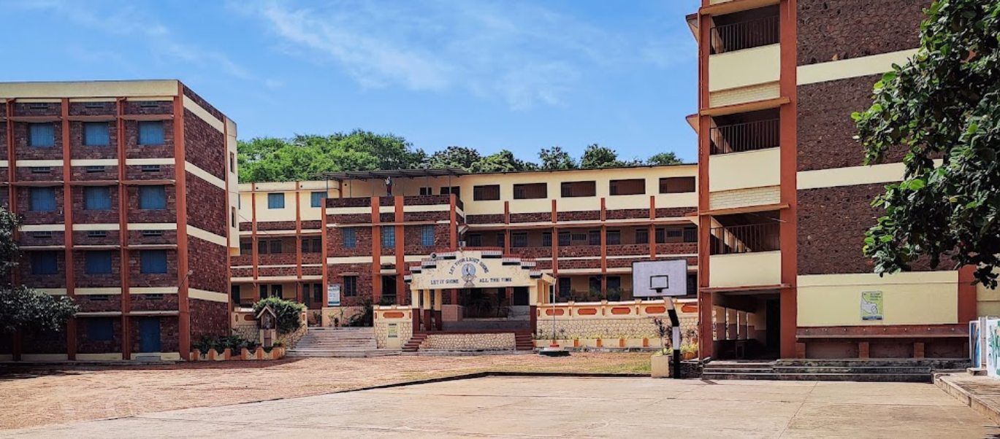
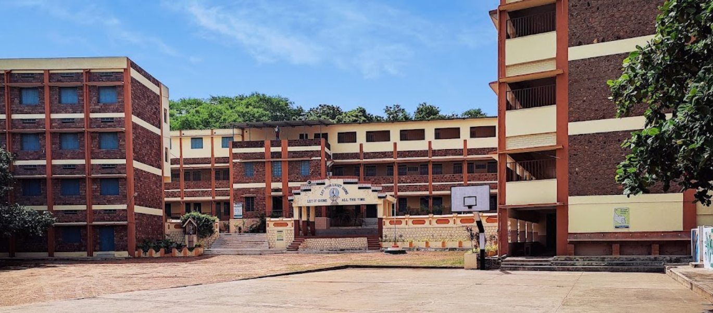
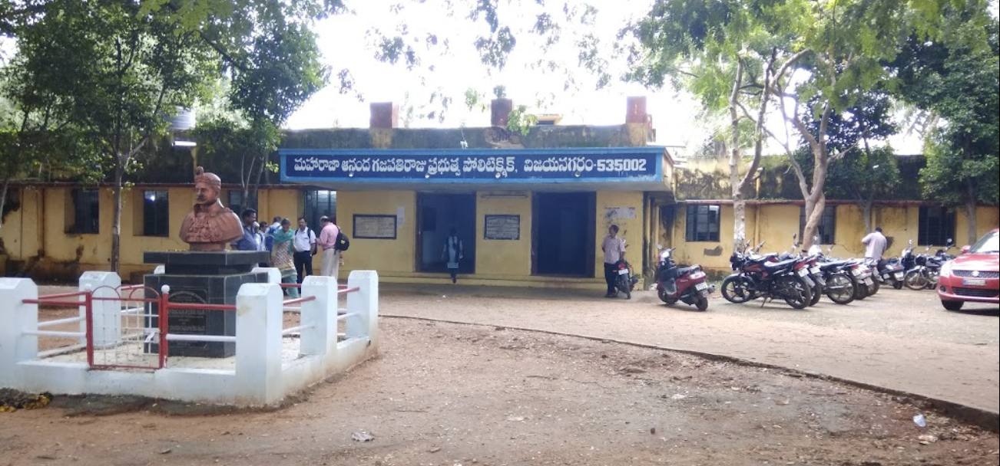
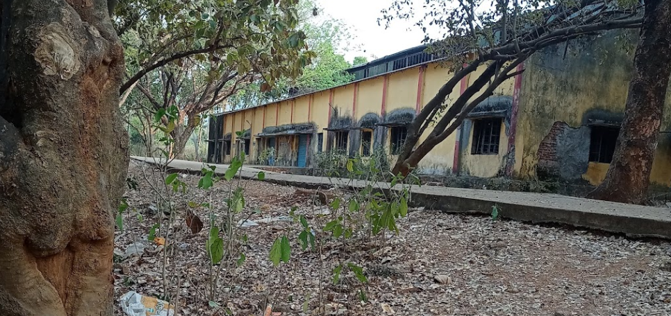
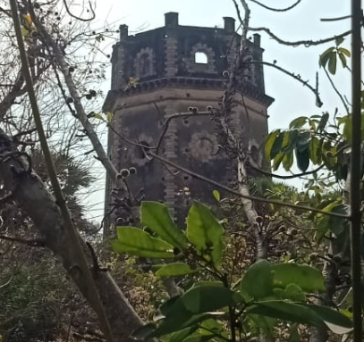
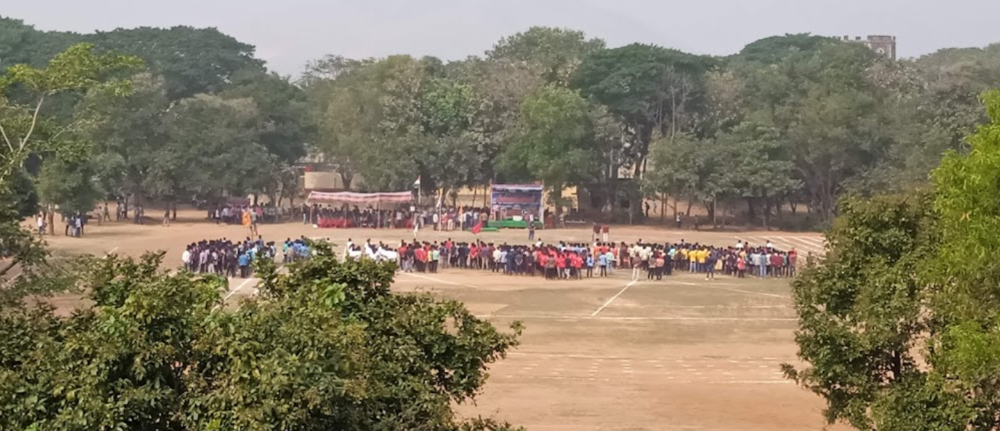

I've done my schooling at sri chaitanya techno school, i was a good student those days. I use to maintain an average percentage of 87% for every standard. i have changed many schools until i came to my 8th standard, from L.K.G-4th standard i've studied DE PAUL SCHOOL which is located at ukkunagaram, after my 4th standard i have changed to ST.JOSEPH'S SECONDARY SCHOOL that is located at malkapuram i love the ground of this school upon completion of the 8th standard, due to house shifting i'm into SRI CHAITANYA TECHNO SCHOOL where my schooling ends without any big deal.Like everyone in my generation i'm also an above average student with 9.5CGPA upon completion of my 10th standard.But my actual life starts after SCHOOLING where everyone started saying that life is not easy after 10th..
 

After my school life i got two options in my mind "should i proceed into M.P.C or should i be technically strong by choosing diploma..? , at least i might get to know the work-standards as we have labs, workshops and all in diploma !, what should i do..?", at this situation 2 persons changed my life by saying that we will join diploma as we have more scope and value for it in the future as they are my bestfriends by that time i've opted to go to diploma with my friends, we even joined coaching centre which is a lot more famous for this field, even though all my family members opposed me not to join diploma (they wanted me to pursue IIT) i have some how managed to joined diploma coaching by fighting with them for my friends .But you guys know what, my friends joined bridge course -it's a pre training course for joining intermediate, they have shifted for the sake of their girl-friend's and then they again tried to convince me for joining BUT me who already fought a mini world-war with my family for joining diploma.I thought that they will kick my a** if i say. so, i continued my diploma coaching without going to classes, but choosing shopping malls to rome over the class...
Somehow, by loosing my 2 friends i've started my journey into diploma. i've opted for many colleges and i secured a seat at M.R.A.G.R.govt POLYTECHNIC,VIZAINAGARAM under the specilization-diploma in metallurgical engineering , i am not even familiar about what it is and along with this fears everyone started saying that it is the most toughest branch in diploma and many students are end up as droup-out's.Then i got a chance to shift my branch into mechanical engineering which was in much demand during that period, and i'm also somewhat intrested towards it as i have 0 knwledge over the other branches
So i have successfully shifted to mechanical thereby loosing my scholarship and other benefits, Now i'm allowed to sit in mechanical classrooms where everyone started to see us odd as we are incapable of securing a mechanical seat and shifted from other branch, in the whole class i somehow managed to find a group of friends who see me the way i used to be with them, i'm gifted with about 6 friends in which 2 of them are close to me. I was admitted into hostel as the college is completely in another district and that made me cry at that moment cuz it's the 1st time i'm living far from my hometown.And due to the extrordinary food at the hostel i've changed to room with my friends upon completion of my 2nd year 2nd sem with corona in the past and a lot of mischiveous things, i'm left with 2 backlogs MATHS and E.M , i've entered 3rd year in which we felt like rowdies and started dictating the juniors, everything was good until the period of exams.And after the examinations we are into training for 6 months, by that time all my friends have successfully passed their semister exams, me- left with a backlog in mathematics and not at all intrested in further studies as i thought that i couldn't do it.Even after all these failures i was completely fine without any worries "I ONLY WOORY BEFORE THE DAY OF THE EXAM.." i've paid the examination fees of EMCET without any hope,i didn't even prepare for a single bit before attempting the exam.And then the S.B.T.E.T released the results of my supplimentary exam which i know that i will defenitely fail and magically i've managed to pass the exam with 29 marks, 1 mark away from failure.And out of my 2 bestfriends 1 got failed in the exam which is the worst thing that happened to him i got no words for him, now as per acedemics we are seperated but not as friends.
Now it's result time for my EMCET exam and i thought that i would get rank above 50,000 cuz i don't even know the options that i opted even writing EMCET was not my decision it was my family who got me into this, i just continued the flow along with others i'm in a race along with the society. Surpricingly i got rank of 1900.. god know the answers i think so...and my friend got more than me, we were not that close. Now its time for opting the colleges, due to the over confidence on my rank i only opted 7 colleges under mechanical engineering in which i've not even allotted for one college and my friend got a seat in other college.Now i'm left with my last chance in opting the colleges So i've decided to opt the college in which he got a seat and you know what i have almost opted for 50+ colleges. And one day before closing our options my brother told me to opt some colleges under specilization in CSE. i only opted for 3 colleges which i thought that they wouldn't come for my rank, this is the mistake that i made in loosing my friends. i got allotted into a college in CSE and when my friend get to know about he completely stopped talking to me cuz i've not even informed him about my option change.I have not intimated him because i thought that i will not get those colleges with this low rank.There started my engineering life with lots and lots of scoldings from my family members after all these failures of decisions i made.
So the only option that was left is to join the college, i've joined DADI INSTITUTE OF ENGINEERING AND TECHNOLOGY with specilization in COMPUTER SCIENCE ENGINEERING. From now on i've decided that "what ever the problem is, only i should take the decision and should not get influenced by any other" i've decided to concentrate on my future and work hard, after few days all the motivation went into hell from the next day i started enjoying and ignored all my studies, then came my 2-1 semester where my angel subject mathematics is there, here the story of diploma continued i'm left with a backlog in mathematics and the legacy of backlogs continued,But by the time of 4th year i've cleared all backlogs except mathematics. Although i lost my diploma friends and the vibes with them, i've created some with my new b.tech friends as they are also from diploma background i love all my friends and hoping to get the best in my career